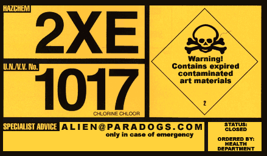

|  THIS SITE NO LONGER EXISTS. This site has been shut down by the Department of Health. Warning! Many hazardous art-materials are still floating around. so, if u still wanna sniff some of alien's digital paint and thinners, I suggest u take a look here at HTTP://alien.untergrund.net |